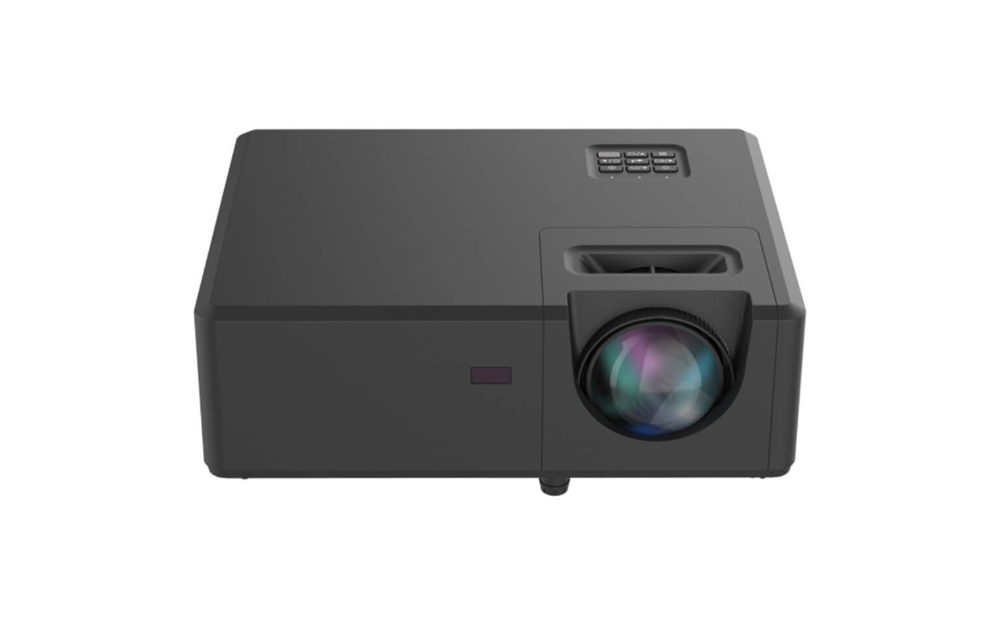

BOM
BOM=物料明細表(物料料號、結構、用量、屬性....)
BOM 結構
- 95：可出貨成品
- DP：包裝階段(包材)
- DC：組立階段(虛擬階、整台投影機的裸機)
- AK：配件組
料號分類
00PCB電路板
11接頭
22已燒錄IC
23光學元件
35標籤
36使用手冊/卡片
37磁片
38授權標籤
39軟體(燒錄程式)
41磁性零件(core)
42電線組裝
43開關
44反向器inverter
45遙控器
47電源轉換器
48LCD模組
49電機雜項
51塑膠零件
52橡膠製品
53皮製品
54玻璃/陶瓷製品
55紙製品
56包裝用緩衝材
57化學製品
58木製品
61金屬零件
70自製半成品
75外購半成品
76委外半成品
80PCB板組裝半成品
料號編碼原則
料號編碼有12碼，分兩種情況：
- 有Project code有關： XX.AAABB.CDE□□□
- XX(大分類)
- AAA(Project code)
- BB(流水碼)
- .(G or H)
- C(Reserved)
- D(Customer code)
- E(Extension code)
- □□□(Revision code)
- Project code無關：例如電子類(電阻質、電容質、IC型號)產品（共用料）編碼：XX.AAAAA.A BB
- XX(大分類)
- AAAAA.A(其他分類)
- .(G or H)
- BB(流水碼，從01~ZZ)
材質標識：
- G：無鉛材質
- H：表示除了符合G料的規格之外，尚需符合無鹵素、PVC、鄰苯二甲酸酯類之化學物質管制要求。
BOM表
- Level(階層)：標示料在產品結構的層次
- Item(料號P/N)：物料編號
- Description(名稱)：物料描述
- Revision：版本
- Type(屬性)：
- Phantom item(區分階層)
- Subassembly(開工單的半成品料號ex70階光機、80階PCBA)
- Purchased item(需採購的物料)
- Status(承認狀態)：
- Engineer(RD未完成承認的新料)
- Condition(有條件的承認)
- Active(已完成承認的物料)
- Frozen(凍結的物料，通常是指EOL的物料)
- Inactive(不可再使用的物料)
- Phase out(RD在建立新BOM時，無法使用)
- UOM(單位)：計量單位
- Quantity(數量)：需求量
- ECO(工程變更單號)
BOM發行流程
| 階段 | Owner | Stage | 條件 | 狀態 |
| E-BOM | RD | Mock-up | 先申請Project code和料號 | 尚未凍結，RD可自行修改 |
| Pre-BOM | RD | EVT/DVT | C1文件結案 | 變更須填寫Pre-BOM Change Sheet |
| Final Pre-BOM | RD | PVT | 全部物料至少Condition approve | 變更須發行ECR |
| Formal BOM | PE | MP | 全部物料至少Condition approve | 變更須發行ECR |
投影機介紹
點擊投影機圖片，查看內部構造與詳細元件介紹。

機構模組ME
- 外殼（塑膠或金屬材質）
- 腳墊 / 支架（調整角度）
- 吊裝孔（支援天花板吊掛）
- 自動鏡頭蓋（高階機型專有）
- 振膜、音圈、磁鐵（喇叭結構）
- Class-D 音頻放大器
- 音效處理晶片（虛擬環繞音效、EQ 調校）
投影機規格
1. 解析度：每一個方向上的像素(pixel)數量，長X寬，單位面積內的像素越多代表解析度越高。
- HD (1280x720)：720p
- Full HD (1920x1080)：1080p
- 4K (3840x2160)：2160p
- 8K (7680x4320)
HZ (赫茲)：畫面刷新率(Refresh Rate)，即螢幕每秒重新繪製畫面的次數。
- 例如：120HZ > 60HZ，畫面更流暢。
- 刷新率越高，畫面越流暢。
- 高刷新率能夠減少畫面模糊地帶。
2. 流明（Lumen）：流明越高，亮度越亮，但為環境考量的重要因素。
- ANSI流明亮度為實際投影出來的亮度。
- ANSI流明亮度僅為光源流明度的1/3。ex：3000流明約=900ANSI。
- 建議亮度：
• 家用：1000~2000流明
• 商務：3000~5000流明
• 工程：5000以上
3. 對比度：
- 畫面最亮的白色與最暗的黑色的亮度比值。
- 對比度越高則顯得色彩度越飽和、畫面越銳利。
4. 投射比：數值越低表示在短距離可投射較大畫面。（=距離/畫面寬）
- 長焦(RT)：1.5~2.5
- 短焦(ST)：0.4~1.5
- 超短焦(UST)：<0.4
5. 鏡頭位移 v.s 梯形校正
- 鏡頭位移：透過整個光機鏡頭水平或垂直位移，調整投影影像位置。
- 梯形校正：用數位方式讓梯形畫面修正成正方矩形畫面。
6. 幀率（FPS）：每秒播放影格數
- 播放內容的品質。
- 常見如30FPS, 60FPS，幀率越高越流暢。
- 幀率不穩定可能導致畫面卡頓。
應用場景與建議規格
1. 家庭劇院／娛樂觀影
適用場景：客廳、小型影音室、租屋房間、家庭露天院落等。
建議規格：
- 亮度：遮光環境2000~2400流明即可，有自然光環境建議3000流明以上。
- 解析度：Full HD (1920×1080)為主流，追求更高畫質可選4K（3840×2160）。
- 對比度：高對比度（10000:1以上）還原電影細節。
- 短焦/超短焦鏡頭：空間受限或需近距離投影時（1.5~2.5米投100吋）。
2. 教育教室／校園講堂
適用場景：中小教室、多功能教室、講堂等。
建議規格：
- 亮度：小教室建議3000以上流明，大講堂/禮堂4000流明以上。
- 解析度：至少XGA（1024×768），主流建議WXGA（1280×800）或Full HD。
- 螢幕尺寸：建議100吋或以上，所有學生都能清楚觀看。
- 光源壽命：LED/雷射光源，免頻繁更換，總運維成本低。
- 鏡頭類型：短焦/超短焦鏡頭，適用空間限制場所。
3. 商務會議
適用場景：小型會議室、中大型多功能會議空間。
建議規格：
- 亮度：
- 小型10人：3000~3499流明
- 中型20人：3500~4999流明
- 大型40人以上：5000流明以上
- 解析度：XGA/WXGA~Full HD，文書及多媒體均細膩呈現。
- 無線投影：支援Wi-Fi、AirPlay、Miracast等，方便投影各種設備畫面。
- 投影尺寸：依空間建議100吋以上、150吋為佳。
- 易維護性：快捷開關機、燈泡壽命長。
- 多訊號輸入：支援雙信號分畫顯示、USB投影等多元功能。
4. 戶外露營
適用場景：戶外露營、郊遊、移動商展、戶外家庭聚會。
建議規格：
- 亮度：日間/強光建議3000流明以上，夜間或遮光狀況500~1000流明亦可。
- 解析度：HD(720p)或Full HD。
- 電源供應：內建電池或可外接行動電源，支援USB-C供電。
- 體積重量：便攜式設計（1kg內最佳）。
- 連接功能：支援藍牙、Wi-Fi、無線影像傳輸。
- 防護設計：防潑水（如IPX2）、耐摔。
- 投影距離：短焦設計，1~3米即可投影60~100吋畫面。
- 其他：影音播放、藍牙喇叭一體化設計。
5. 展覽／互動展示
適用場景：展覽館、博物館、互動遊戲區、光雕藝術、商場展示。
建議規格：
- 亮度：依場館大小3000流明~8000流明（高階大場需8000流明以上）。
- 解析度：WUXGA（1920×1200）或4K。
- 短焦/超短焦：適合展臺近距離大畫面投影。
- 色彩與畫質：高色準、高對比度雷射/LED技術。